Proyectos · Render
Quinta
Mil Lunas
01
Ficha técnica
- Zona
- Prados del Este, Caracas
- Entrega
- 2027
- Estado
- En obra
02
Día / Noche

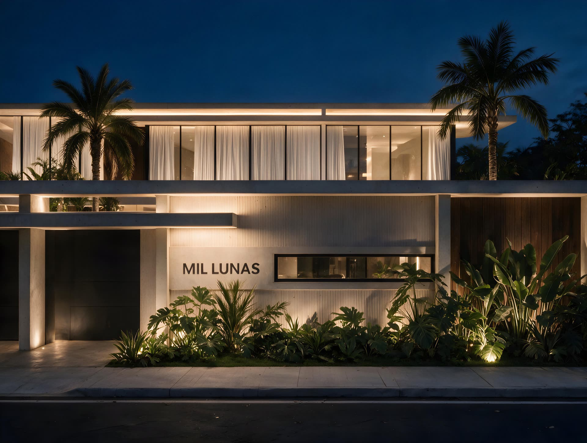
DíaNoche03
Galería
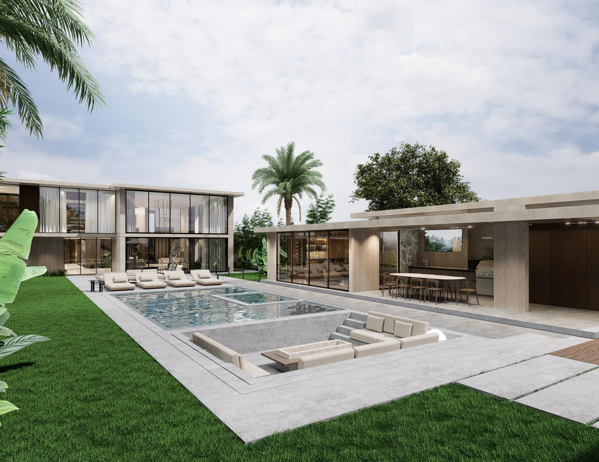
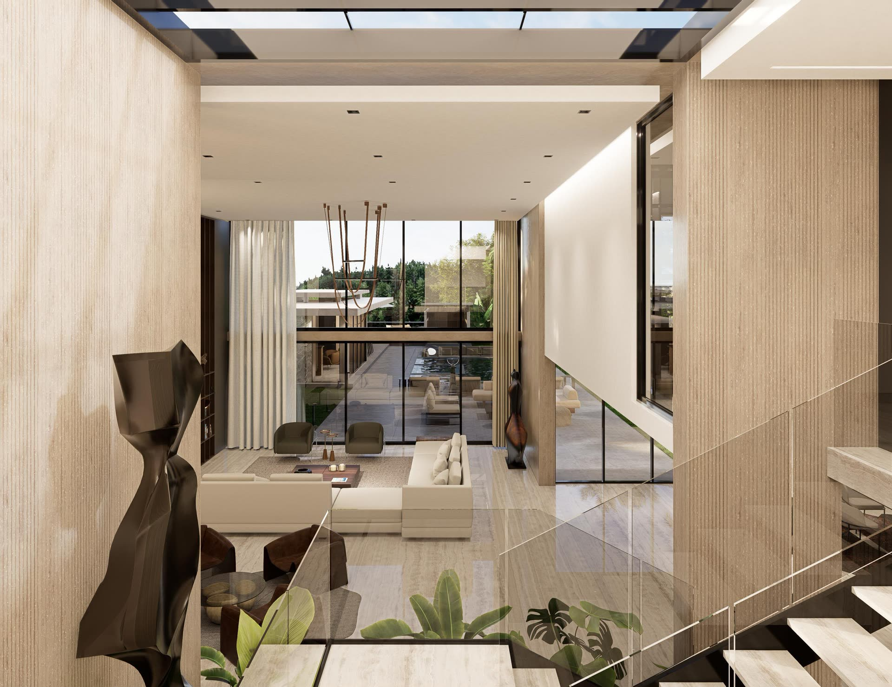
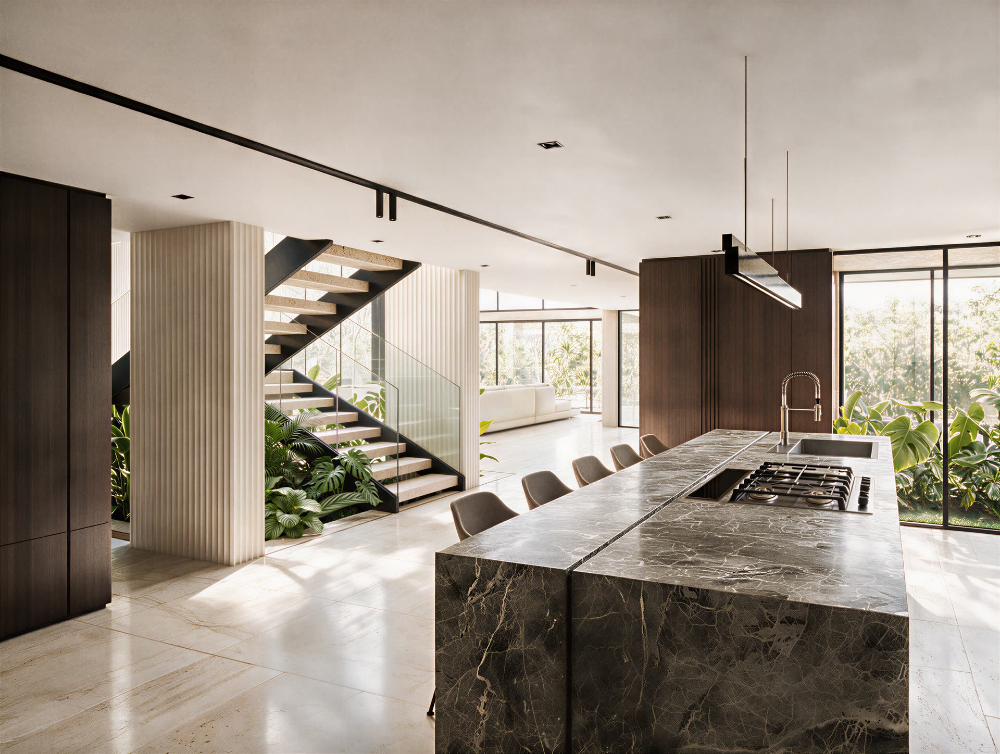
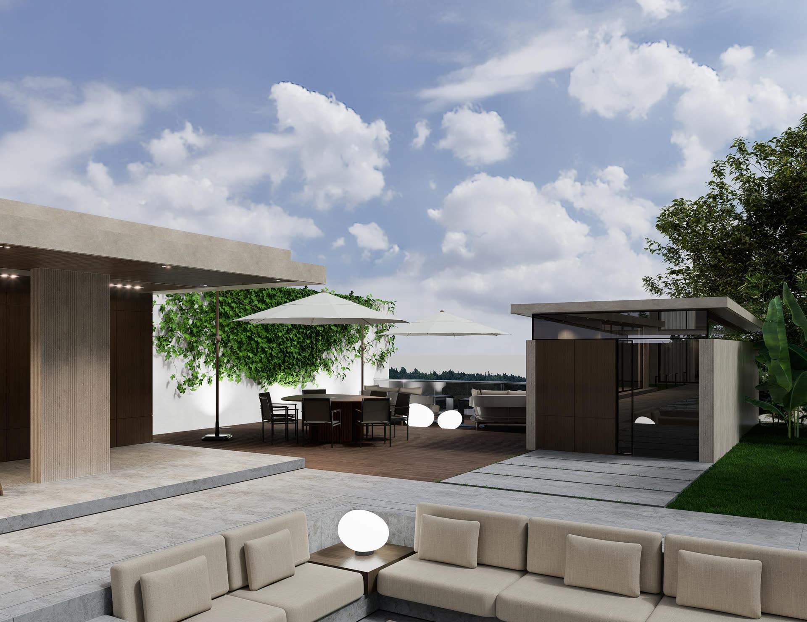
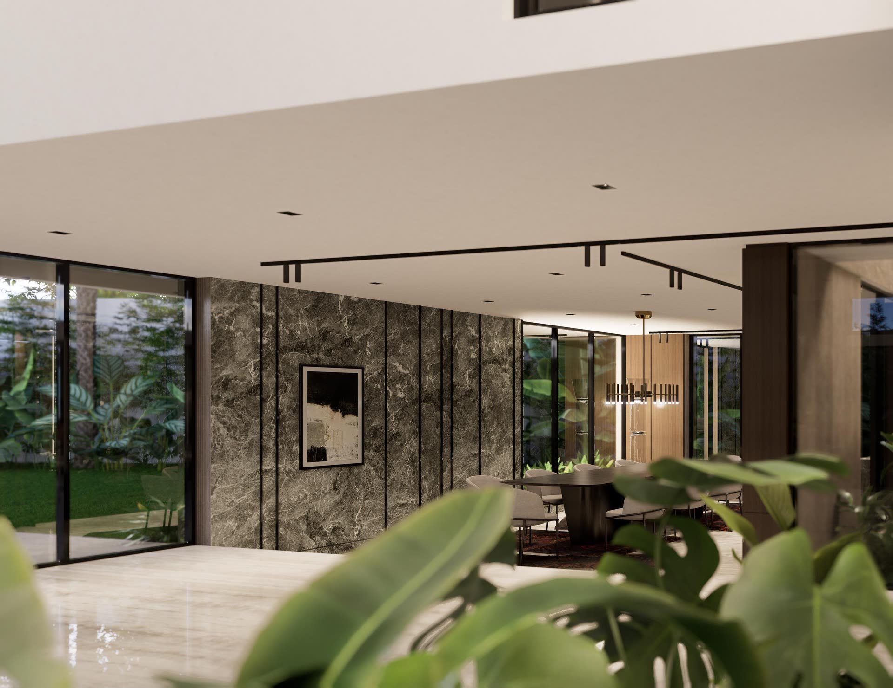
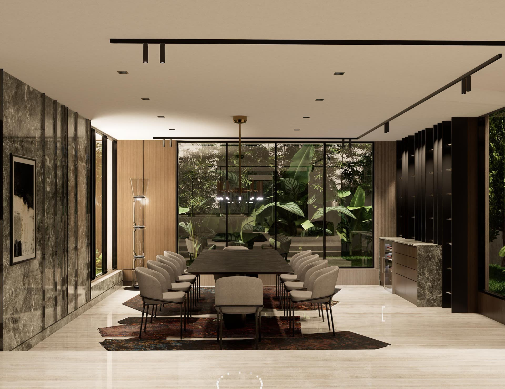
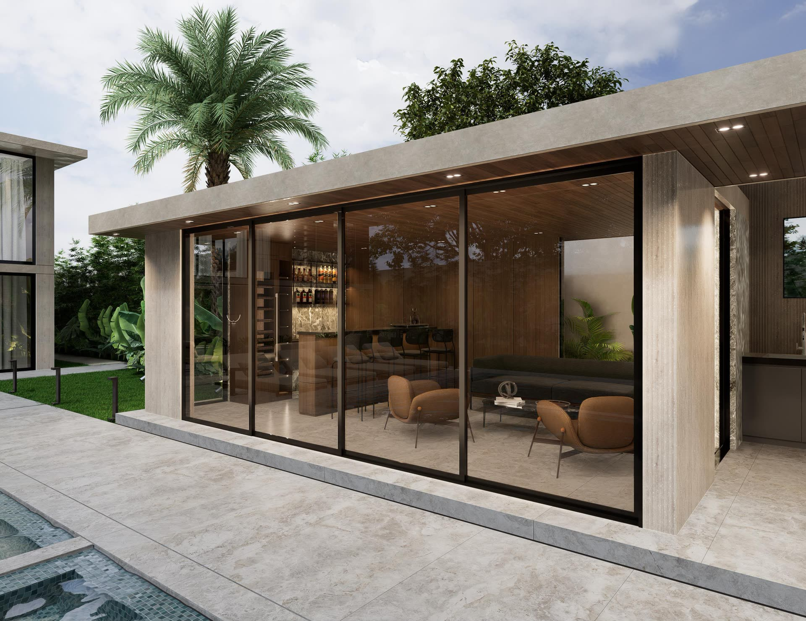
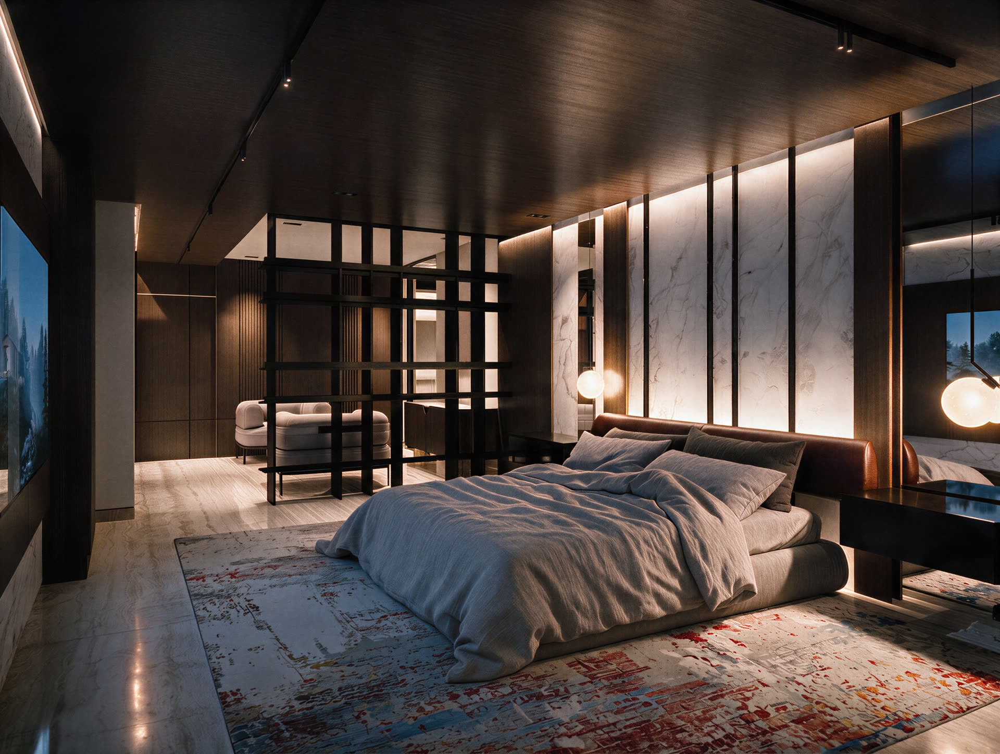
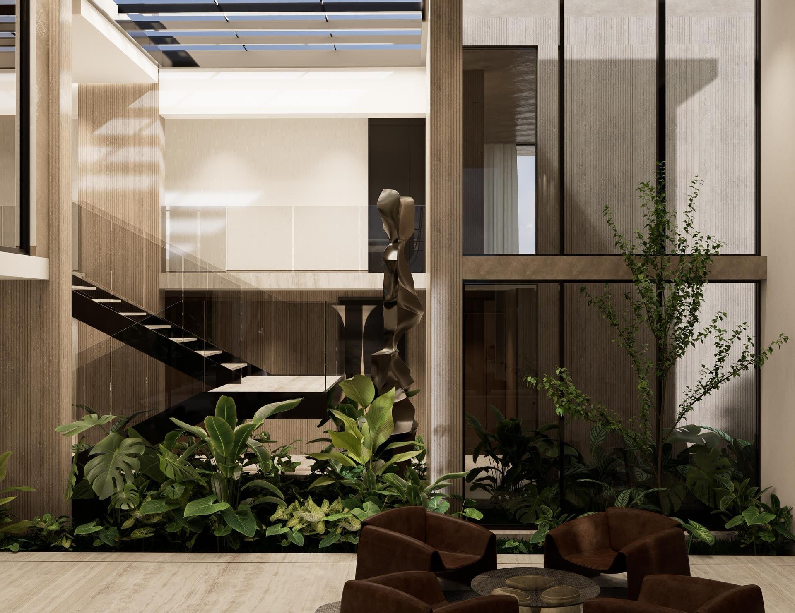
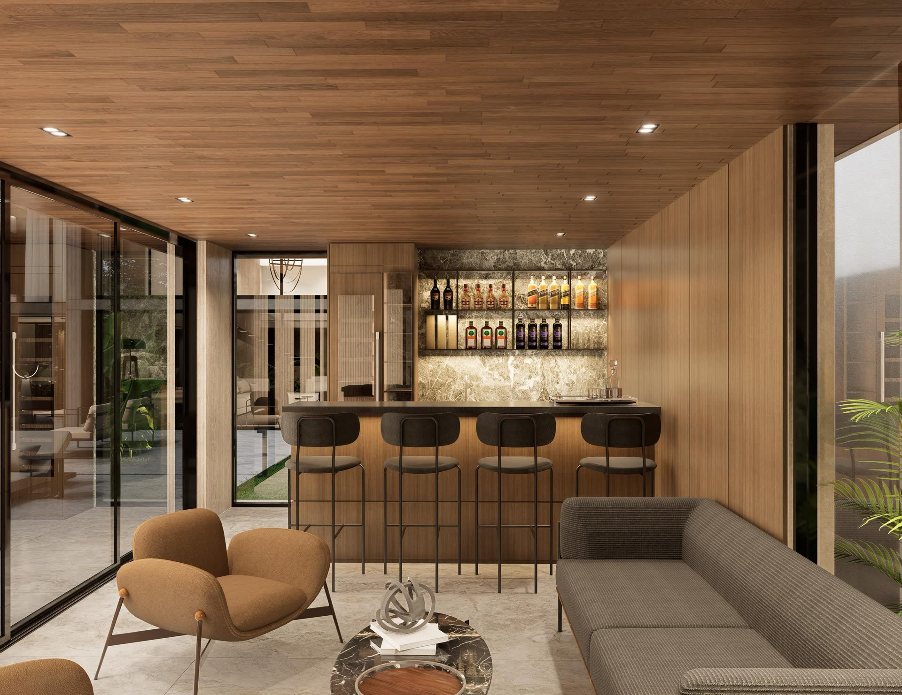
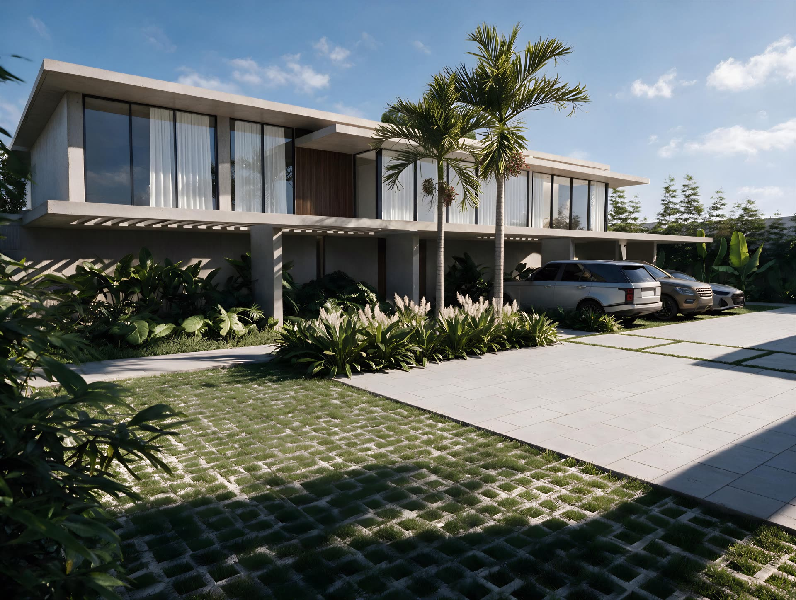
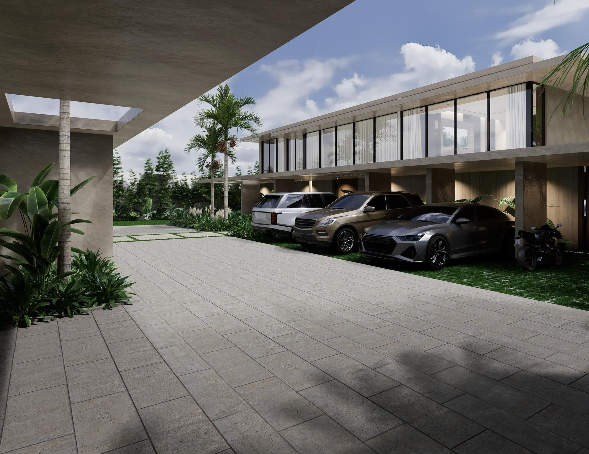
04
Recorrido
05
Créditos
- Arquitectura
- Arq. Javier Pereira
- Arquitectura
- Arq. Josse Salazar
- Construcción
- TRAZZO Construcciones
06